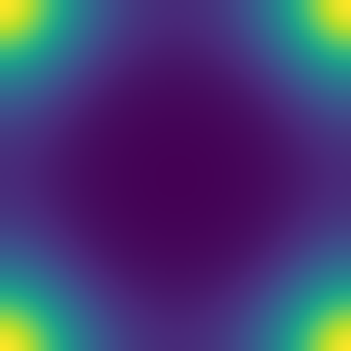

Maxwell — E・B はベクトル場
∂tE = ∇×B, ∂tB = −∇×E (c=1)
.fe(28行):
field E : vector と宣言すれば、物理は
E' = E + dt * curl B / B' = B - dt * curl E' の
**添字も成分もない2行**。E' は更新済み配列への参照
(symplectic・袖幅1)。dimension/axes も宣言可能。DSL ソース全文(maxwell3d.fe・24 行)
-- Maxwell's equations in vacuum (c = 1), collocated grid -- dE/dt = curl B -- dB/dt = -curl E' (the B update uses the updated E': symplectic) -- E and B are vector fields and the equations are whole-vector -- equations: no components, no indices. dimension 3 axes x, y, z param dt = 0.1*dx extern exp raw gauss1 = fun(x) exp(-((x-(total_grid_x*dx/2))/(8*dx))**2) field E : vector field B : vector init: E = [| 0, gauss1(i*dx), 0 |] B = [| 0, 0, gauss1(i*dx) |] step: E' = E + dt * curl B B' = B - dt * curl E'
生成された Egison(中間形・fec 出力)(maxwell3d.egi・30 行)
-- -- GENERATED by fec from maxwell3d.fe -- edit the .fe, not this file -- declare symbol dt def E_i := generateTensor (\[i] -> function (x, y, z)) [3] def B_i := generateTensor (\[i] -> function (x, y, z)) [3] def E'_i := generateTensor (\[i] -> function (x, y, z)) [3] def feqE_i := withSymbols [i] E_i + dt * (curl B_#)_i def feqB_i := withSymbols [i] B_i - dt * (curl E'_#)_i def feParams := [("dt", "0.1*dx")] def feHelpers := [ "extern function :: exp" , "gauss1 = fun(x) exp(-((x-(total_grid_x*dx/2))/(8*dx))**2)" ] def feFlds : [(String, Integer)] := [("E", 1), ("B", 1)] def feInits := [ " Ex[i,j,k] = 0" , " Ey[i,j,k] = gauss1(i*dx)" , " Ez[i,j,k] = 0" , " Bx[i,j,k] = 0" , " By[i,j,k] = 0" , " Bz[i,j,k] = gauss1(i*dx)" ] def feSteps := vecEqs "E" feqE_1 feqE_2 feqE_3 ++ vecEqs "B" feqB_1 feqB_2 feqB_3 def main (args: [String]) : IO () := print (emitModelOn 3 ["x", "y", "z"] feParams feHelpers feFlds feInits feSteps)
生成された Formura 全文(maxwell3d.fmr・26 行)
dimension :: 3 axes :: x,y,z double :: dt = 0.1*dx extern function :: exp gauss1 = fun(x) exp(-((x-(total_grid_x*dx/2))/(8*dx))**2) begin function (Ex,Ey,Ez,Bx,By,Bz) = init() double [] :: Ex, Ey, Ez, Bx, By, Bz Ex[i,j,k] = 0 Ey[i,j,k] = gauss1(i*dx) Ez[i,j,k] = 0 Bx[i,j,k] = 0 By[i,j,k] = 0 Bz[i,j,k] = gauss1(i*dx) end function begin function (Ex',Ey',Ez',Bx',By',Bz') = step(Ex,Ey,Ez,Bx,By,Bz) Ex' = Ex[i,j,k] + (-1)*Bz[i,j-1,k]*dt/(2*dy) + Bz[i,j+1,k]*dt/(2*dy) + By[i,j,k-1]*dt/(2*dz) + (-1)*By[i,j,k+1]*dt/(2*dz) Ey' = Ey[i,j,k] + Bz[i-1,j,k]*dt/(2*dx) + (-1)*Bz[i+1,j,k]*dt/(2*dx) + (-1)*Bx[i,j,k-1]*dt/(2*dz) + Bx[i,j,k+1]*dt/(2*dz) Ez' = Ez[i,j,k] + (-1)*By[i-1,j,k]*dt/(2*dx) + By[i+1,j,k]*dt/(2*dx) + Bx[i,j-1,k]*dt/(2*dy) + (-1)*Bx[i,j+1,k]*dt/(2*dy) Bx' = Ez'[i,j-1,k]*dt/(2*dy) + (-1)*Ez'[i,j+1,k]*dt/(2*dy) + (-1)*Ey'[i,j,k-1]*dt/(2*dz) + Ey'[i,j,k+1]*dt/(2*dz) + Bx[i,j,k] By' = (-1)*Ez'[i-1,j,k]*dt/(2*dx) + Ez'[i+1,j,k]*dt/(2*dx) + Ex'[i,j,k-1]*dt/(2*dz) + (-1)*Ex'[i,j,k+1]*dt/(2*dz) + By[i,j,k] Bz' = Ey'[i-1,j,k]*dt/(2*dx) + (-1)*Ey'[i+1,j,k]*dt/(2*dx) + (-1)*Ex'[i,j-1,k]*dt/(2*dy) + Ex'[i,j+1,k]*dt/(2*dy) + Bz[i,j,k] end function

Ey パルスの伝播(+9.9 セル/理想 +10)
エネルギードリフト 4.8e-5・パルス +9.9/10(成分手書き版と同値)。
ベクトル形への移行で dt² 項が消え全ステンシルが袖幅1に。
Maxwell — 微分形式(DEC)
∂tB = −dE, ∂tE = ⋆d⋆B
(E ∈ Ω¹: 辺、B ∈ Ω²: 面)
.fe(27行):
field B : 2-form と宣言すれば
E' = E + dt * codF2 B・B' = B - dt * d E' の2行が物理の全て。
配置情報ゼロ(次数が Yee 格子を決める)。assert-dd-zero E' で
d∘d=0 の CAS 検査を通らない限り生成しない。DSL ソース全文(maxwell_dec.fe・23 行)
-- Maxwell's equations as discrete differential forms (DEC) -- Faraday : dB/dt = -dE' (d : 1-form -> 2-form) -- Ampere : dE/dt = codF2 B (*d* : 2-form -> 1-form) -- No grid placements appear anywhere: the form degrees determine the -- Yee lattice, and generation is gated on the CAS reducing d(dE') to 0. param dt = 0.5*dx extern exp raw gauss1 = fun(x) exp(-((x-(total_grid_x*dx/2))/(8*dx))**2) field E : 1-form field B : 2-form init: E = [| 0, gauss1(i*dx), 0 |] B = [| 0, 0, gauss1((i+0.5)*dx) |] step: E' = E + dt * codF2 B B' = B - dt * d E' assert-dd-zero E'
生成された Egison(中間形・fec 出力)(maxwell_dec.egi・35 行)
-- -- GENERATED by fec from maxwell_dec.fe -- edit the .fe, not this file -- declare symbol dt def E_i := generateTensor (\[i] -> function (x, y, z)) [3] def Es : [MathValue] := [E_1, E_2, E_3] def B_i := generateTensor (\[i] -> function (x, y, z)) [3] def Bs : [MathValue] := [B_1, B_2, B_3] def E'_i := generateTensor (\[i] -> function (x, y, z)) [3] def EsN : [MathValue] := [E'_1, E'_2, E'_3] def feDD := dF2 (dF1 EsN) def feParams := [("dt", "0.5*dx")] def feHelpers := [ "extern function :: exp" , "gauss1 = fun(x) exp(-((x-(total_grid_x*dx/2))/(8*dx))**2)" ] def feFlds : [(String, Integer)] := [("E", 1), ("B", 1)] def feInits := [ " Ex[i,j,k] = 0" , " Ey[i,j,k] = gauss1(i*dx)" , " Ez[i,j,k] = 0" , " Bx[i,j,k] = 0" , " By[i,j,k] = 0" , " Bz[i,j,k] = gauss1((i+0.5)*dx)" ] def feSteps := vecEqs "E" (E_1 + dt * nth 1 (codF2 Bs)) (E_2 + dt * nth 2 (codF2 Bs)) (E_3 + dt * nth 3 (codF2 Bs)) ++ vecEqs "B" (B_1 - dt * nth 1 (dF1 EsN)) (B_2 - dt * nth 2 (dF1 EsN)) (B_3 - dt * nth 3 (dF1 EsN)) def main (args: [String]) : IO () := if feDD = 0 then print (emitModelOn 3 ["x", "y", "z"] feParams feHelpers feFlds feInits feSteps) else print "# ERROR: d . d /= 0 on this grid -- refusing to generate"
生成された Formura 全文(maxwell_dec.fmr・26 行)
dimension :: 3 axes :: x,y,z double :: dt = 0.5*dx extern function :: exp gauss1 = fun(x) exp(-((x-(total_grid_x*dx/2))/(8*dx))**2) begin function (Ex,Ey,Ez,Bx,By,Bz) = init() double [] :: Ex, Ey, Ez, Bx, By, Bz Ex[i,j,k] = 0 Ey[i,j,k] = gauss1(i*dx) Ez[i,j,k] = 0 Bx[i,j,k] = 0 By[i,j,k] = 0 Bz[i,j,k] = gauss1((i+0.5)*dx) end function begin function (Ex',Ey',Ez',Bx',By',Bz') = step(Ex,Ey,Ez,Bx,By,Bz) Ex' = Ex[i,j,k] + Bz[i,j,k]*dt/(dy) + (-1)*Bz[i,j-1,k]*dt/(dy) + (-1)*By[i,j,k]*dt/(dz) + By[i,j,k-1]*dt/(dz) Ey' = Ey[i,j,k] + (-1)*Bz[i,j,k]*dt/(dx) + Bz[i-1,j,k]*dt/(dx) + Bx[i,j,k]*dt/(dz) + (-1)*Bx[i,j,k-1]*dt/(dz) Ez' = Ez[i,j,k] + By[i,j,k]*dt/(dx) + (-1)*By[i-1,j,k]*dt/(dx) + (-1)*Bx[i,j,k]*dt/(dy) + Bx[i,j-1,k]*dt/(dy) Bx' = Ez'[i,j,k]*dt/(dy) + (-1)*Ez'[i,j+1,k]*dt/(dy) + (-1)*Ey'[i,j,k]*dt/(dz) + Ey'[i,j,k+1]*dt/(dz) + Bx[i,j,k] By' = (-1)*Ez'[i,j,k]*dt/(dx) + Ez'[i+1,j,k]*dt/(dx) + Ex'[i,j,k]*dt/(dz) + (-1)*Ex'[i,j,k+1]*dt/(dz) + By[i,j,k] Bz' = Ey'[i,j,k]*dt/(dx) + (-1)*Ey'[i+1,j,k]*dt/(dx) + (-1)*Ex'[i,j,k]*dt/(dy) + Ex'[i,j+1,k]*dt/(dy) + Bz[i,j,k] end function

dt=0.5dx で +49.9 セル伝播(Yee 版と同一バイナリ)
手書きスタガーの Yee 版とバイト一致・div B ≡ 0(機械精度)
— d(B′) = dB − dt·d(dE′) の構造的帰結。
弾性波 — 添字記法とテンソル場
ρ∂tvi = ∂jσij,
∂tσij = λδij∇·v′ + μ(∂iv′j+∂jv′i)
v は添字族、σ は 対称ビュー(
sig_2_1 は文字どおり s_1_2 と同一シンボル)。
更新は generateTensor 2本 → 9式に展開。
スタガード配置も添字から導出(σij は sV i ⊕ sV j = Virieux 配置)。Egison ソース全文(elastic3d.egi・75 行)
-- -- elastic3d.egi : linear elastic waves, velocity-stress formulation on -- the Virieux staggered grid, in the DSL v0 style: the velocity vector -- and the symmetric stress matrix are single indexed function families, -- rho dv_i/dt = d_j sigma_ij -- d sigma_ij/dt = la delta_ij (div v') + mu (d_i v'_j + d_j v'_i) -- are two generateTensor equations, and the staggered placements are -- DERIVED from the index structure (sigma_ij at sV i (+) sV j, the -- half-offset addition mod 1 = the Virieux layout). With la=2, mu=1, -- rho0=1 the P and S speeds are 2 and 1, measured by the check driver. -- -- Run: egison -l fmrgen.egi -l fmrdsl.egi elastic3d.egi > elastic3d.fmr -- declare symbol dt, la, mu, rho0 def v_i := generateTensor (\[i] -> function (x, y, z)) [3] def v'_i := generateTensor (\[i] -> function (x, y, z)) [3] def s_i_j := generateTensor (\[i, j] -> function (x, y, z)) [3, 3] -- symmetric view: sig_2_1 is literally the s_1_2 symbol def sig_i_j : Matrix MathValue := generateTensor (\[a, b] -> if a <= b then s_a_b else s_b_a) [3, 3] -- staggers derived from the index structure def sV (a: Integer) : [MathValue] := unit3 a (1 / 2) def addS (p: [MathValue]) (q: [MathValue]) : [MathValue] := map (\(u1, u2) -> if u1 + u2 = 1 then 0 else u1 + u2) (zip p q) def sSig (a: Integer) (b: Integer) : [MathValue] := addS (sV a) (sV b) def s0 : [MathValue] := [0, 0, 0] def sigF (a: Integer) (b: Integer) : (MathValue, [MathValue]) := (sig_a_b, sSig a b) def velNF (b: Integer) : (MathValue, [MathValue]) := (v'_b, sV b) def divv' := sum (map (\b -> dYee b s0 (velNF b)) [1, 2, 3]) -- rho dv_i/dt = d_j sigma_ij def vNext : Vector MathValue := generateTensor (\[a] -> v_a + (dt / rho0) * sum (map (\b -> dYee b (sV a) (sigF a b)) [1, 2, 3])) [3] -- d sigma_ij/dt = la delta_ij (div v') + mu (d_i v'_j + d_j v'_i) def sigNext : Matrix MathValue := generateTensor (\[a, b] -> sig_a_b + dt * ((if a = b then la * divv' else 0) + mu * (dYee a (sSig a b) (velNF b) + dYee b (sSig a b) (velNF a)))) [3, 3] def params := [("la", "2.0"), ("mu", "1.0"), ("rho0", "1.0"), ("dt", "0.0005")] def helpers := [ "# la=2, mu=1, rho0=1 -> vp = 2, vs = 1" , "extern function :: exp" , "gp = fun(x) exp(-((x - 0.3)/0.02)*((x - 0.3)/0.02))" ] def flds : [(String, Integer)] := [("v", 1), ("s", 2)] def inits := [ " vx[i,j,k] = gp((i + 0.5)*dx)" , " vy[i,j,k] = gp(i*dx)" , " vz[i,j,k] = 0.0" , " sxx[i,j,k] = 0.0 - 2.0*gp(i*dx)" , " syy[i,j,k] = 0.0" , " szz[i,j,k] = 0.0" , " sxy[i,j,k] = 0.0 - 1.0*gp((i + 0.5)*dx)" , " sxz[i,j,k] = 0.0" , " syz[i,j,k] = 0.0" ] def steps := vecEqs "v" vNext_1 vNext_2 vNext_3 ++ symEqs "s" sigNext_1_1 sigNext_2_2 sigNext_3_3 sigNext_1_2 sigNext_1_3 sigNext_2_3 def main (args: [String]) : IO () := print (emitModel params helpers flds inits steps)
生成された Formura 全文(elastic3d.fmr・36 行)
dimension :: 3
axes :: x,y,z
double :: la = 2.0
double :: mu = 1.0
double :: rho0 = 1.0
double :: dt = 0.0005
# la=2, mu=1, rho0=1 -> vp = 2, vs = 1
extern function :: exp
gp = fun(x) exp(-((x - 0.3)/0.02)*((x - 0.3)/0.02))
begin function (vx,vy,vz,sxx,syy,szz,sxy,sxz,syz) = init()
double [] :: vx, vy, vz, sxx, syy, szz, sxy, sxz, syz
vx[i,j,k] = gp((i + 0.5)*dx)
vy[i,j,k] = gp(i*dx)
vz[i,j,k] = 0.0
sxx[i,j,k] = 0.0 - 2.0*gp(i*dx)
syy[i,j,k] = 0.0
szz[i,j,k] = 0.0
sxy[i,j,k] = 0.0 - 1.0*gp((i + 0.5)*dx)
sxz[i,j,k] = 0.0
syz[i,j,k] = 0.0
end function
begin function (vx',vy',vz',sxx',syy',szz',sxy',sxz',syz') = step(vx,vy,vz,sxx,syy,szz,sxy,sxz,syz)
vx' = vx[i,j,k] + dt*sxz[i,j,k]/(dz*rho0) + (-1)*dt*sxz[i,j,k-1]/(dz*rho0) + dt*sxy[i,j,k]/(dy*rho0) + (-1)*dt*sxy[i,j-1,k]/(dy*rho0) + (-1)*dt*sxx[i,j,k]/(dx*rho0) + dt*sxx[i+1,j,k]/(dx*rho0)
vy' = vy[i,j,k] + dt*syz[i,j,k]/(dz*rho0) + (-1)*dt*syz[i,j,k-1]/(dz*rho0) + (-1)*dt*syy[i,j,k]/(dy*rho0) + dt*syy[i,j+1,k]/(dy*rho0) + dt*sxy[i,j,k]/(dx*rho0) + (-1)*dt*sxy[i-1,j,k]/(dx*rho0)
vz' = vz[i,j,k] + (-1)*dt*szz[i,j,k]/(dz*rho0) + dt*szz[i,j,k+1]/(dz*rho0) + dt*syz[i,j,k]/(dy*rho0) + (-1)*dt*syz[i,j-1,k]/(dy*rho0) + dt*sxz[i,j,k]/(dx*rho0) + (-1)*dt*sxz[i-1,j,k]/(dx*rho0)
sxx' = dt*la*vz'[i,j,k]/(dz) + (-1)*dt*la*vz'[i,j,k-1]/(dz) + dt*la*vy'[i,j,k]/(dy) + (-1)*dt*la*vy'[i,j-1,k]/(dy) + 2*dt*mu*vx'[i,j,k]/(dx) + (-2)*dt*mu*vx'[i-1,j,k]/(dx) + dt*la*vx'[i,j,k]/(dx) + (-1)*dt*la*vx'[i-1,j,k]/(dx) + sxx[i,j,k]
syy' = dt*la*vz'[i,j,k]/(dz) + (-1)*dt*la*vz'[i,j,k-1]/(dz) + 2*dt*mu*vy'[i,j,k]/(dy) + (-2)*dt*mu*vy'[i,j-1,k]/(dy) + dt*la*vy'[i,j,k]/(dy) + (-1)*dt*la*vy'[i,j-1,k]/(dy) + dt*la*vx'[i,j,k]/(dx) + (-1)*dt*la*vx'[i-1,j,k]/(dx) + syy[i,j,k]
szz' = 2*dt*mu*vz'[i,j,k]/(dz) + (-2)*dt*mu*vz'[i,j,k-1]/(dz) + dt*la*vz'[i,j,k]/(dz) + (-1)*dt*la*vz'[i,j,k-1]/(dz) + dt*la*vy'[i,j,k]/(dy) + (-1)*dt*la*vy'[i,j-1,k]/(dy) + dt*la*vx'[i,j,k]/(dx) + (-1)*dt*la*vx'[i-1,j,k]/(dx) + szz[i,j,k]
sxy' = (-1)*dt*mu*vx'[i,j,k]/(dy) + dt*mu*vx'[i,j+1,k]/(dy) + (-1)*dt*mu*vy'[i,j,k]/(dx) + dt*mu*vy'[i+1,j,k]/(dx) + sxy[i,j,k]
sxz' = (-1)*dt*mu*vx'[i,j,k]/(dz) + dt*mu*vx'[i,j,k+1]/(dz) + (-1)*dt*mu*vz'[i,j,k]/(dx) + dt*mu*vz'[i+1,j,k]/(dx) + sxz[i,j,k]
syz' = (-1)*dt*mu*vy'[i,j,k]/(dz) + dt*mu*vy'[i,j,k+1]/(dz) + (-1)*dt*mu*vz'[i,j,k]/(dy) + dt*mu*vz'[i,j+1,k]/(dy) + syz[i,j,k]
end function
同時発射した P パルス(vx)と S パルス(vy)が速度差で分離
実測 vp=1.990/2・vs=0.995/1・エネルギー 3.4e-4。
数式部は移行前と同一(差はコメント位置のみ)。
計量つき拡散 — 幾何入力は1行
∂tu = (1/√g) ∂i(√g gij ∂ju)
トーラス R=2, r=1; hs = [1, 2+cos θ, 1](Lamé スケール因子)だけが幾何入力
トーラス R=2, r=1; hs = [1, 2+cos θ, 1](Lamé スケール因子)だけが幾何入力
√g = h₁h₂h₃、√g g^{ii} = √g/hᵢ² を CAS が導出し、
init の係数式(
ca[i,j,k] = cos((i*dx)+dx/(2))+2 等)まで自動生成。Egison ソース全文(metric_torus.egi・68 行)
-- -- metric_torus.egi : heat equation on a curved surface (a torus), -- with the Laplace-Beltrami coefficients DERIVED SYMBOLICALLY by -- Egison's CAS from the metric and baked into the generated init. -- DSL v0 style: the Formura scaffolding comes from emitModel. -- -- metric (R=2, r=1): ds^2 = d(th)^2 + (2 + cos th)^2 d(ph)^2 -- given as its Lame scale factors hs = [h_th, h_ph, 1]: that list is -- the ONLY geometric input. Everything downstream -- -- sqrt(g) = h_th h_ph = 2 + cos th -- A = sqrt(g) g^{th th} = sqrt(g)/h_th^2 = 2 + cos th -- B = sqrt(g) g^{ph ph} = sqrt(g)/h_ph^2 = 1/(2 + cos th) -- is computed by the CAS (the printed .fmr init shows the results). -- -- du/dt = (1/sqrt(g)) [ d_th( A d_th u ) + d_ph( B d_ph u ) ] -- -- The coefficients are frozen into coefficient FIELDS (ca, cb, sg) at -- init, so the step needs no transcendental functions; conservation of -- the metric-weighted heat sum(sg*u) is exact by the flux form. -- -- Run: egison -l fmrgen.egi -l fmrdsl.egi metric_torus.egi > metric_torus.fmr -- declare symbol dt -- the metric as Lame scale factors (theta = x, phi = y); this line is -- the only geometric input def hs : [MathValue] := [1, 2 + cos x, 1] -- derived by the CAS: sqrt(g) = h1 h2 h3, sqrt(g) g^{ii} = sqrt(g)/hi^2 def sqg := foldl (\p q -> p * q) 1 hs def acoef := sqg / (nth 1 hs ^ 2) -- sqrt(g) g^{theta theta} def bcoef := sqg / (nth 2 hs ^ 2) -- sqrt(g) g^{phi phi} def u0 := exp (cos x + cos y - 2) -- fields def u := function (x, y, z) def ca := function (x, y, z) def cb := function (x, y, z) def sg := function (x, y, z) def f1 := function (x, y, z) def f2 := function (x, y, z) def s0 := [0, 0, 0] def sH1 := [1 / 2, 0, 0] def sH2 := [0, 1 / 2, 0] def params := [("dt", "0.0005")] def helpers := ["extern function :: exp", "extern function :: cos"] def flds : [(String, Integer)] := [("u", 0), ("ca", 0), ("cb", 0), ("sg", 0)] def inits := [ fmrInit "u" u0 , fmrInit "ca" (substitute [(x, x + hx / 2)] acoef) , fmrInit "cb" bcoef , fmrInit "sg" sqg ] def steps := [ fmrEq "f1" (ca * dYee 1 sH1 (u, s0)) , fmrEq "f2" (cb * dYee 2 sH2 (u, s0)) , fmrEq "u'" (u + dt * (dYee 1 s0 (f1, sH1) + dYee 2 s0 (f2, sH2)) / sg) ] ++ scalarEq "ca" ca ++ scalarEq "cb" cb ++ scalarEq "sg" sg def main (args: [String]) : IO () := print (emitModel params helpers flds inits steps)
生成された Formura 全文(metric_torus.fmr・24 行)
dimension :: 3 axes :: x,y,z double :: dt = 0.0005 extern function :: exp extern function :: cos begin function (u,ca,cb,sg) = init() double [] :: u, ca, cb, sg u[i,j,k] = exp(cos((j*dy)) + cos((i*dx)) + (-2)) ca[i,j,k] = cos((i*dx) + dx/(2)) + 2 cb[i,j,k] = (1)/(cos((i*dx)) + 2) sg[i,j,k] = cos((i*dx)) + 2 end function begin function (u',ca',cb',sg') = step(u,ca,cb,sg) f1 = (-1)*ca[i,j,k]*u[i,j,k]/(dx) + ca[i,j,k]*u[i+1,j,k]/(dx) f2 = (-1)*cb[i,j,k]*u[i,j,k]/(dy) + cb[i,j,k]*u[i,j+1,k]/(dy) u' = u[i,j,k] + dt*f2[i,j,k]/(dy*sg[i,j,k]) + (-1)*dt*f2[i,j-1,k]/(dy*sg[i,j,k]) + dt*f1[i,j,k]/(dx*sg[i,j,k]) + (-1)*dt*f1[i-1,j,k]/(dx*sg[i,j,k]) ca' = ca[i,j,k] cb' = cb[i,j,k] sg' = sg[i,j,k] end function


u(θ,φ): 原点の塊(四隅=周期像)が計量を感じつつ拡散(t=0 → 3000)
独立 C 参照と 3.3e-16・Σ√g·u 保存 2.5e-15・移行前とバイト一致。
非線形 Klein–Gordon(φ⁴ キンク)
∂ttφ = ∂xxφ + φ − φ³
.fe(23行): スカラー2場の leapfrog(kick–drift)。
phi' = phi + dt * w' の w' は「更新後の w」への参照
(Formura の primed 配列)= シンプレクティック。DSL ソース全文(kleingordon.fe・22 行)
-- Nonlinear Klein-Gordon (phi^4): phi_tt = phi_xx + phi - phi^3 -- Leapfrog (kick-drift); the drift references the updated w', which -- makes the pair symplectic. Initial data: a kink-antikink pair -- boosted to v = +-0.2 (Lorentz-contracted tanh profiles). param dt = 0.05 extern tanh extern cosh raw raw # gamma/sqrt(2) = 0.7216878...; gamma*v/sqrt(2) = 0.1443375... field phi : scalar field w : scalar init: phi = tanh(0.7216878364870323*(i*dx - 16.0)) - tanh(0.7216878364870323*(i*dx - 48.0)) - 1.0 w = 0.0 - 0.14433756729740645*(1.0/cosh(0.7216878364870323*(i*dx - 16.0)))**2 - 0.14433756729740645*(1.0/cosh(0.7216878364870323*(i*dx - 48.0)))**2 step: w' = w + dt * (dC2 1 phi + phi - phi * phi * phi) phi' = phi + dt * w'
生成された Egison(中間形・fec 出力)(kleingordon.egi・26 行)
-- -- GENERATED by fec from kleingordon.fe -- edit the .fe, not this file -- declare symbol dt def phi := function (x, y, z) def w := function (x, y, z) def w' := function (x, y, z) def feParams := [("dt", "0.05")] def feHelpers := [ "extern function :: tanh" , "extern function :: cosh" , "" , "# gamma/sqrt(2) = 0.7216878...; gamma*v/sqrt(2) = 0.1443375..." ] def feFlds : [(String, Integer)] := [("phi", 0), ("w", 0)] def feInits := [ " phi[i,j,k] = tanh(0.7216878364870323*(i*dx - 16.0)) - tanh(0.7216878364870323*(i*dx - 48.0)) - 1.0" , " w[i,j,k] = 0.0 - 0.14433756729740645*(1.0/cosh(0.7216878364870323*(i*dx - 16.0)))**2 - 0.14433756729740645*(1.0/cosh(0.7216878364870323*(i*dx - 48.0)))**2" ] def feSteps := scalarEq "w" (w + dt * (dC2 1 phi + phi - phi * phi * phi)) ++ scalarEq "phi" (phi + dt * w') def main (args: [String]) : IO () := print (emitModelOn 3 ["x", "y", "z"] feParams feHelpers feFlds feInits feSteps)
生成された Formura 全文(kleingordon.fmr・20 行)
dimension :: 3
axes :: x,y,z
double :: dt = 0.05
extern function :: tanh
extern function :: cosh
# gamma/sqrt(2) = 0.7216878...; gamma*v/sqrt(2) = 0.1443375...
begin function (phi,w) = init()
double [] :: phi, w
phi[i,j,k] = tanh(0.7216878364870323*(i*dx - 16.0)) - tanh(0.7216878364870323*(i*dx - 48.0)) - 1.0
w[i,j,k] = 0.0 - 0.14433756729740645*(1.0/cosh(0.7216878364870323*(i*dx - 16.0)))**2 - 0.14433756729740645*(1.0/cosh(0.7216878364870323*(i*dx - 48.0)))**2
end function
begin function (phi',w') = step(phi,w)
w' = (-1)*dt*phi[i,j,k]**3 + dt*phi[i,j,k] + w[i,j,k] + (-2)*dt*phi[i,j,k]/(dx**2) + dt*phi[i-1,j,k]/(dx**2) + dt*phi[i+1,j,k]/(dx**2)
phi' = dt*w'[i,j,k] + phi[i,j,k]
end function
v=±0.2 にブーストした kink–antikink 対が接近(t=0→20→40)
実測速度 ±0.1993・E=2γE_kink 偏差 0.11%・ドリフト 3.3e-7。
拡散方程式 — 最小の DSL モデル
∂tu = κ∇²u
.fe(16行): 場1行・物理1行
(
u' = u + dt * kappa * lap u)+パラメタ2行+初期条件1行。DSL ソース全文(diffusion3d.fe・15 行)
-- The 3D diffusion equation: du/dt = kappa * laplacian(u)
param kappa = 1.0
param dt = 0.1*dx*dx
extern exp
raw gauss = fun(x,y,z) exp(-((x-(total_grid_x*dx/2))/(5*dx))**2 - ((y-(total_grid_y*dy/2))/(5*dy))**2 - ((z-(total_grid_z*dz/2))/(5*dz))**2)
field u : scalar
init:
u = gauss(i*dx,j*dy,k*dz)
step:
u' = u + dt * kappa * lap u生成された Egison(中間形・fec 出力)(diffusion3d.egi・21 行)
-- -- GENERATED by fec from diffusion3d.fe -- edit the .fe, not this file -- declare symbol kappa, dt def u := function (x, y, z) def feParams := [("kappa", "1.0"), ("dt", "0.1*dx*dx")] def feHelpers := [ "extern function :: exp" , "gauss = fun(x,y,z) exp(-((x-(total_grid_x*dx/2))/(5*dx))**2 - ((y-(total_grid_y*dy/2))/(5*dy))**2 - ((z-(total_grid_z*dz/2))/(5*dz))**2)" ] def feFlds : [(String, Integer)] := [("u", 0)] def feInits := [ " u[i,j,k] = gauss(i*dx,j*dy,k*dz)" ] def feSteps := scalarEq "u" (u + dt * kappa * lap u) def main (args: [String]) : IO () := print (emitModelOn 3 ["x", "y", "z"] feParams feHelpers feFlds feInits feSteps)
生成された Formura 全文(diffusion3d.fmr・17 行)
dimension :: 3 axes :: x,y,z double :: kappa = 1.0 double :: dt = 0.1*dx*dx extern function :: exp gauss = fun(x,y,z) exp(-((x-(total_grid_x*dx/2))/(5*dx))**2 - ((y-(total_grid_y*dy/2))/(5*dy))**2 - ((z-(total_grid_z*dz/2))/(5*dz))**2) begin function u = init() double [] :: u u[i,j,k] = gauss(i*dx,j*dy,k*dz) end function begin function u' = step(u) u' = u[i,j,k] + (-2)*dt*kappa*u[i,j,k]/(dz**2) + dt*kappa*u[i,j,k-1]/(dz**2) + dt*kappa*u[i,j,k+1]/(dz**2) + (-2)*dt*kappa*u[i,j,k]/(dy**2) + dt*kappa*u[i,j-1,k]/(dy**2) + dt*kappa*u[i,j+1,k]/(dy**2) + (-2)*dt*kappa*u[i,j,k]/(dx**2) + dt*kappa*u[i-1,j,k]/(dx**2) + dt*kappa*u[i+1,j,k]/(dx**2) end function


z 中央断面: ガウス塊が等方に拡散(100 step)
質量保存 6.4e-13。100³×100step、temporal blocking 5 で 0.19 秒。
Kuramoto–Sivashinsky(時空カオス)
∂tu = −(u²/2)x − uxx − uxxxx
.fe(18行): 4階微分は
local w = dC2 1 u
(中間格子場として emit)を2段重ね — 袖幅1×2 で temporal blocking 安全。DSL ソース全文(ks3d.fe・18 行)
-- Kuramoto-Sivashinsky: u_t = -(u^2/2)_x - u_xx - u_xxxx -- The fourth derivative goes through the intermediate field w = u_xx -- (a `local`, emitted as a grid field line), so every term telescopes -- and sum u is conserved exactly. L = 22: spatio-temporal chaos. param dt = 0.00015 extern cos raw # wavenumbers: 2*pi/22 and its double field u : scalar init: u = cos(0.28559933214452665*i*dx) + 0.1*cos(0.5711986642890533*i*dx) step: local w = dC2 1 u u' = u - dt * (dC 1 (u * u / 2) + w + dC2 1 w)
生成された Egison(中間形・fec 出力)(ks3d.egi・22 行)
-- -- GENERATED by fec from ks3d.fe -- edit the .fe, not this file -- declare symbol dt def u := function (x, y, z) def w := function (x, y, z) def feParams := [("dt", "0.00015")] def feHelpers := [ "extern function :: cos" , "# wavenumbers: 2*pi/22 and its double" ] def feFlds : [(String, Integer)] := [("u", 0)] def feInits := [ " u[i,j,k] = cos(0.28559933214452665*i*dx) + 0.1*cos(0.5711986642890533*i*dx)" ] def feSteps := [fmrEq "w" (dC2 1 u)] ++ scalarEq "u" (u - dt * (dC 1 (u * u / 2) + w + dC2 1 w)) def main (args: [String]) : IO () := print (emitModelOn 3 ["x", "y", "z"] feParams feHelpers feFlds feInits feSteps)
生成された Formura 全文(ks3d.fmr・17 行)
dimension :: 3
axes :: x,y,z
double :: dt = 0.00015
extern function :: cos
# wavenumbers: 2*pi/22 and its double
begin function u = init()
double [] :: u
u[i,j,k] = cos(0.28559933214452665*i*dx) + 0.1*cos(0.5711986642890533*i*dx)
end function
begin function u' = step(u)
w = (-2)*u[i,j,k]/(dx**2) + u[i-1,j,k]/(dx**2) + u[i+1,j,k]/(dx**2)
u' = (-1)*dt*w[i,j,k] + dt*u[i-1,j,k]**2/(4*dx) + (-1)*dt*u[i+1,j,k]**2/(4*dx) + u[i,j,k] + 2*dt*w[i,j,k]/(dx**2) + (-1)*dt*w[i-1,j,k]/(dx**2) + (-1)*dt*w[i+1,j,k]/(dx**2)
end function
時空図(横=x、縦=t: 0→90): セルが分裂・合体するカオス
Lyapunov 内(t=5)で参照実装と 3.6e-14・Σu ドリフト 5.4e-12(60万 step)。